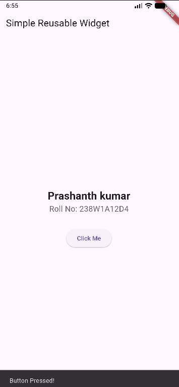
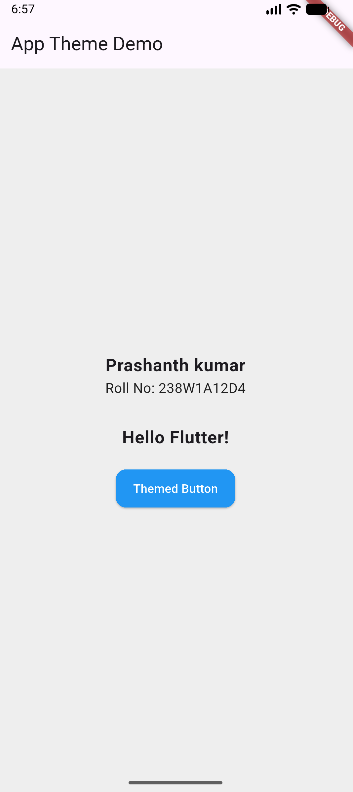
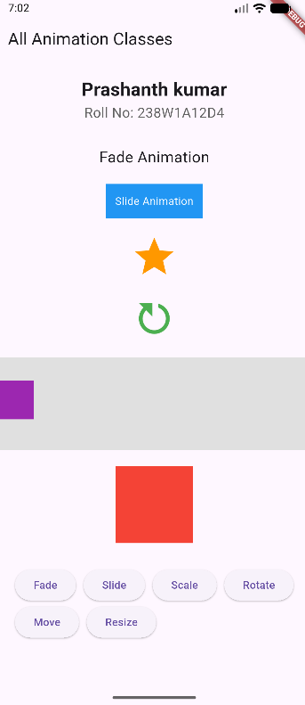
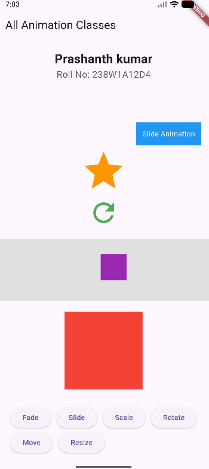

Learning Objectives
- Create reusable custom widgets for common UI components
- Apply app-wide styling using themes and custom styles
- Implement consistent design patterns across the application
- Understand widget composition and code reusability
1. Creating Reusable Custom Widgets
Custom widgets allow you to create reusable UI components that can be used throughout your application. By extracting common UI patterns into separate widget classes, you improve code maintainability and reduce duplication.
Key Benefits:
- Reusability: Write once, use anywhere in your app
- Maintainability: Changes to the widget reflect everywhere it's used
- Clean Code: Separates concerns and improves readability
- Consistency: Ensures uniform UI across your application
import 'package:flutter/material.dart';
void main() => runApp(MyApp());
class MyApp extends StatelessWidget {
@override
Widget build(BuildContext context) {
return MaterialApp(home: HomeScreen());
}
}
/// Created by: Prashanth kumar (Roll No: 238W1A12D4)
class CustomButton extends StatelessWidget {
final String text;
final VoidCallback onPressed;
const CustomButton({super.key, required this.text, required this.onPressed});
@override
Widget build(BuildContext context) {
return ElevatedButton(
onPressed: onPressed,
child: Text(text),
);
}
}
class HomeScreen extends StatelessWidget {
@override
Widget build(BuildContext context) {
return Scaffold(
appBar: AppBar(title: Text("Simple Reusable Widget")),
body: Center(
child: Column(
mainAxisAlignment: MainAxisAlignment.center,
children: [
Text(
"Prashanth kumar",
style: TextStyle(fontSize: 24, fontWeight: FontWeight.bold),
),
Text(
"Roll No: 238W1A12D4",
style: TextStyle(fontSize: 18, color: Colors.grey[700]),
),
SizedBox(height: 30),
CustomButton(
text: "Click Me",
onPressed: () {
ScaffoldMessenger.of(context).showSnackBar(
SnackBar(content: Text("Button Pressed!")),
);
},
),
],
),
),
);
}
}
How It Works:
- CustomButton Widget: Encapsulates the button logic with customizable text and onPressed callback
- Constructor Parameters: Accepts text and onPressed as required parameters for flexibility
- Usage in HomeScreen: Simply instantiate CustomButton with desired properties
- SnackBar Feedback: Shows a message when the button is pressed

2. Apply App-Wide Styling Using Themes
Flutter's theming system allows you to define consistent visual styles across your entire application. ThemeData provides a comprehensive way to customize colors, fonts, button styles, and more from a single location.
Theme Components:
- Primary Color: Main color used throughout the app (buttons, app bars, etc.)
- Scaffold Background: Default background color for all screens
- Text Theme: Defines typography styles for different text elements
- Component Themes: Specific styling for buttons, cards, inputs, etc.
import 'package:flutter/material.dart';
void main() => runApp(MyApp());
/// Created by: Prashanth kumar (Roll No: 238W1A12D4)
class MyApp extends StatelessWidget {
@override
Widget build(BuildContext context) {
return MaterialApp(
title: "Theme Example",
theme: ThemeData(
primarySwatch: Colors.blue, // App primary color
scaffoldBackgroundColor: Colors.grey[200], // Background color
textTheme: TextTheme(
bodyLarge: TextStyle(fontSize: 20, fontWeight: FontWeight.bold),
bodyMedium: TextStyle(fontSize: 16, color: Colors.black87),
),
elevatedButtonTheme: ElevatedButtonThemeData(
style: ElevatedButton.styleFrom(
backgroundColor: Colors.blue,
foregroundColor: Colors.white,
padding: EdgeInsets.symmetric(horizontal: 20, vertical: 12),
shape: RoundedRectangleBorder(borderRadius: BorderRadius.circular(12)),
),
),
),
home: HomeScreen(),
);
}
}
class HomeScreen extends StatelessWidget {
@override
Widget build(BuildContext context) {
return Scaffold(
appBar: AppBar(title: Text("App Theme Demo")),
body: Center(
child: Column(
mainAxisAlignment: MainAxisAlignment.center,
children: [
Text("Prashanth kumar", style: Theme.of(context).textTheme.bodyLarge),
Text("Roll No: 238W1A12D4", style: Theme.of(context).textTheme.bodyMedium),
SizedBox(height: 30),
Text("Hello Flutter!", style: Theme.of(context).textTheme.bodyLarge),
SizedBox(height: 20),
ElevatedButton(
onPressed: () {},
child: Text("Themed Button"),
),
],
),
),
);
}
}
Theme Configuration Breakdown:
- primarySwatch: Sets the primary color palette (Colors.blue)
- scaffoldBackgroundColor: Sets default screen background to light grey
- textTheme: Defines bodyLarge (bold, 20px) and bodyMedium (16px) text styles
- elevatedButtonTheme: Customizes button appearance with blue background, white text, padding, and rounded corners
- Theme.of(context): Accesses the defined theme to apply styles consistently
Benefits of Theming:
- Centralized styling makes it easy to change the entire app's appearance
- Ensures consistency across all screens and widgets
- Supports light and dark themes with minimal code changes
- Makes the app look professional and polished

3. Adding Animations to Enhance UX
Animations bring your Flutter app to life by providing smooth transitions and visual feedback. Flutter provides various AnimatedWidgets that make it easy to add animations without complex animation controllers.
Animation Types Covered:
- Fade: AnimatedOpacity - Smooth fade in/out effects
- Slide: AnimatedSlide - Move widgets horizontally or vertically
- Scale: AnimatedScale - Zoom widgets in and out
- Rotation: AnimatedRotation - Rotate widgets smoothly
- Position: AnimatedPositioned - Move widgets within a Stack
- Container: AnimatedContainer - Animate size, color, and other properties
import 'package:flutter/material.dart';
void main() => runApp(MyApp());
class MyApp extends StatelessWidget {
@override
Widget build(BuildContext context) {
return MaterialApp(home: AllAnimationsDemo());
}
}
/// Created by: Prashanth kumar (Roll No: 238W1A12D4)
class AllAnimationsDemo extends StatefulWidget {
@override
_AllAnimationsDemoState createState() => _AllAnimationsDemoState();
}
class _AllAnimationsDemoState extends State {
bool _visible = true;
bool _slided = false;
double _scale = 1.0;
double _rotation = 0.0;
double _position = 0.0;
double _boxSize = 100;
@override
Widget build(BuildContext context) {
return Scaffold(
appBar: AppBar(title: Text("All Animation Classes")),
body: SingleChildScrollView(
child: Column(
mainAxisAlignment: MainAxisAlignment.center,
children: [
SizedBox(height: 20),
Text(
"Prashanth kumar",
style: TextStyle(fontSize: 24, fontWeight: FontWeight.bold),
),
Text(
"Roll No: 238W1A12D4",
style: TextStyle(fontSize: 18, color: Colors.grey[700]),
),
SizedBox(height: 30),
AnimatedOpacity(
opacity: _visible ? 1.0 : 0.0,
duration: Duration(seconds: 1),
child: Text("Fade Animation", style: TextStyle(fontSize: 20)),
),
SizedBox(height: 20),
AnimatedSlide(
offset: _slided ? Offset(1, 0) : Offset(0, 0),
duration: Duration(seconds: 1),
child: Container(
color: Colors.blue,
padding: EdgeInsets.all(12),
child: Text("Slide Animation", style: TextStyle(color: Colors.white)),
),
),
SizedBox(height: 20),
AnimatedScale(
scale: _scale,
duration: Duration(seconds: 1),
child: Icon(Icons.star, size: 60, color: Colors.orange),
),
SizedBox(height: 20),
AnimatedRotation(
turns: _rotation,
duration: Duration(seconds: 1),
child: Icon(Icons.refresh, size: 60, color: Colors.green),
),
SizedBox(height: 20),
Container(
height: 120,
color: Colors.grey[300],
child: Stack(
children: [
AnimatedPositioned(
duration: Duration(seconds: 1),
left: _position,
top: 30,
child: Container(
width: 50,
height: 50,
color: Colors.purple,
),
),
],
),
),
SizedBox(height: 20),
AnimatedContainer(
duration: Duration(seconds: 1),
curve: Curves.easeInOut,
width: _boxSize,
height: _boxSize,
color: Colors.red,
),
SizedBox(height: 30),
Wrap(
spacing: 10,
children: [
ElevatedButton(onPressed: () => setState(() => _visible = !_visible), child: Text("Fade")),
ElevatedButton(onPressed: () => setState(() => _slided = !_slided), child: Text("Slide")),
ElevatedButton(onPressed: () => setState(() => _scale = _scale == 1.0 ? 1.5 : 1.0), child: Text("Scale")),
ElevatedButton(onPressed: () => setState(() => _rotation += 0.25), child: Text("Rotate")),
ElevatedButton(onPressed: () => setState(() => _position = _position == 0 ? 200 : 0), child: Text("Move")),
ElevatedButton(onPressed: () => setState(() => _boxSize = _boxSize == 100 ? 150 : 100), child: Text("Resize")),
],
),
],
),
),
);
}
}
How Each Animation Works:
- AnimatedOpacity: Toggles opacity between 0.0 and 1.0 for fade effects
- AnimatedSlide: Changes offset from (0,0) to (1,0) to slide horizontally
- AnimatedScale: Scales widget from 1.0 to 1.5 times its original size
- AnimatedRotation: Rotates widget by adding 0.25 turns (90 degrees) each time
- AnimatedPositioned: Moves widget from left position 0 to 200 pixels within Stack
- AnimatedContainer: Smoothly transitions between different sizes (100px to 150px)
Key Animation Concepts:
- Duration: Specifies how long the animation takes (typically 1 second)
- Curve: Defines the animation timing (e.g., easeInOut for smooth acceleration/deceleration)
- setState: Triggers the animation by updating the widget state
- Interactive Buttons: Each button demonstrates a different animation type

Before Animation

After Animation
Key Takeaways
- Custom Widgets: Extract reusable UI components into separate widget classes for better code organization
- Constructor Parameters: Make widgets flexible by accepting customizable properties
- ThemeData: Define app-wide styling in one place for consistent visual appearance
- Theme.of(context): Access and apply theme properties throughout your widgets
- Component Themes: Customize specific widget types (buttons, text, cards) globally
- Maintainability: Changes to custom widgets or themes automatically reflect across the entire app
- Animations: Use AnimatedWidgets for simple, smooth animations without complex controllers
- User Experience: Animations provide visual feedback and make apps feel more responsive